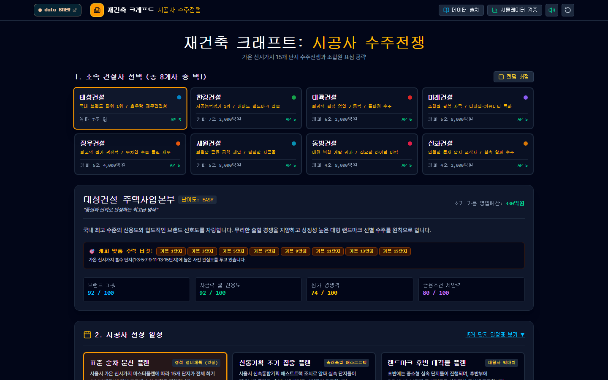
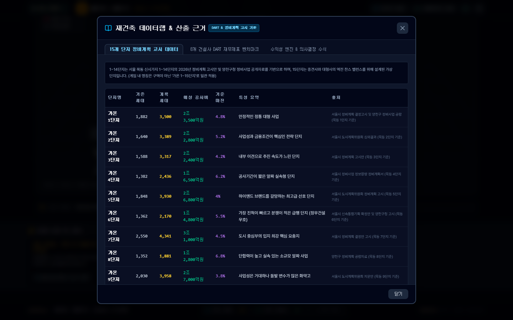

What this game is
For a construction firm, a redevelopment project can put trillions of won on the line at once. Yet there is no right answer on which complex to target, when, and how. Budgets are limited, construction capacity has its limits, and rivals are after the same complexes.
Reconstruction Craft turns this bidding war into a turn-based strategy game. First you pick one of 8 fictional construction firms, then set the contractor-selection schedule (plan) for the 15 complexes, your order target and the length of play. Each turn you spend action points (AP) and sales budget to court association members complex by complex. On the map, colors show whether each complex is in your favor, too close to call, or leaning to a rival.
Industry tips circulate too. Finding out which complex is hearing talk of a single bidder, or which firm put forward aggressive terms, costs action points and budget. Whether you spend first on information, money or time decides who wins.
The firms, complexes and people are all fictional. The game does not explain or predict any real redevelopment bidding war or any construction firm's strategy.
How a game runs
Choose one of 8 fictional firms — Taesung, Hangang, Daeryuk, Mirae, Jeongwoo, Sewon, Dongbang and Shinhwa — or get one at random. Each firm differs in construction capacity (4.2 to 7.2 trillion won), action points (AP 5–6), difficulty, sales budget, and its brand power, financial strength, cost competitiveness and financing-offer strength, and each has its own focus complexes.
Pick one of three plans: the standard sequential spread plan (the classic, with the 15 complexes bidding evenly across the whole period), the early-concentration plan under the Shintonggihoek fast-track program (the choice complexes bunch up in the first half), or the landmark late-clash plan (mammoth complexes such as No. 5, 7, 10, 13 and 14 clash at the same time in the second half). You can unfold the schedule table for all 15 complexes.
Set a target of 3.5 trillion won (safe), 5.6 trillion (ambitious), 7.7 trillion (aggressive) or 10.5 trillion (reckless, with a risk of being fired if you fail), and play either the standard 18 months (18 turns) or the shortened 12 months (12 turns).
View the 15 Gaon New Town complexes as a 3D city or a 2D tactical map. Colors distinguish your orders won, rival orders won, your lead, a toss-up, a rival lead, and bidding-war preparation. Rotate and zoom the camera with the mouse, and click a complex for details.
As sales head you manage the trust of the CEO and CFO (for example 75%), and check your order record (counted up to 5 complexes), sales budget, remaining construction capacity and expected net profit. You meet the complexes' residents and association members in the Gaon chat room. You can also see the order status and a detailed strength analysis of the 7 rival firms.
Rumors circulate every turn, such as a single bidder pushing a private contract or a rival's aggressive relocation-cost package. A tip check (1 AP, 400 million won) lets you separate truth from rumor and factor it into your strategy.
Screen preview

Start — pick a firm, schedule and target
Orders — control map of the 15 complexes

Data Lab — complex redevelopment-plan notice data
Rules and data
The firm names, complex names and people are all fictional. However, the scale and construction costs of Complexes 1–14 were designed from real redevelopment-plan notices and public data, and the service states that only Complex 15 is fictional. See the service's data-source screen for the detailed formulas.
Good to know
This game is a simplified simulation of a redevelopment bidding war. Real contractor selection involves far more variables, including association general meetings, the relevant laws, promotion rules and bid terms, and the game covers only some of them.
Firm names, complex names, executives and association members are all fictional. They have nothing to do with real construction firms or complexes and do not predict real bidding results.
The top of the service has menus for data sources and simulator validation. See those screens to check the basis for the rules.
Tech and how it was made
Development status
Anyone can play right away. Both the standard 18-month (18 turns) and shortened 12-month (12 turns) modes are supported.